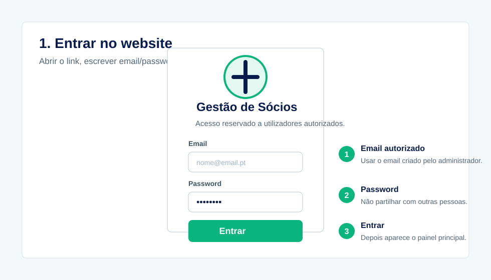
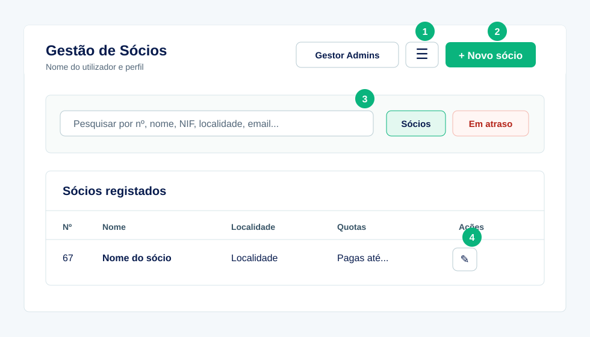
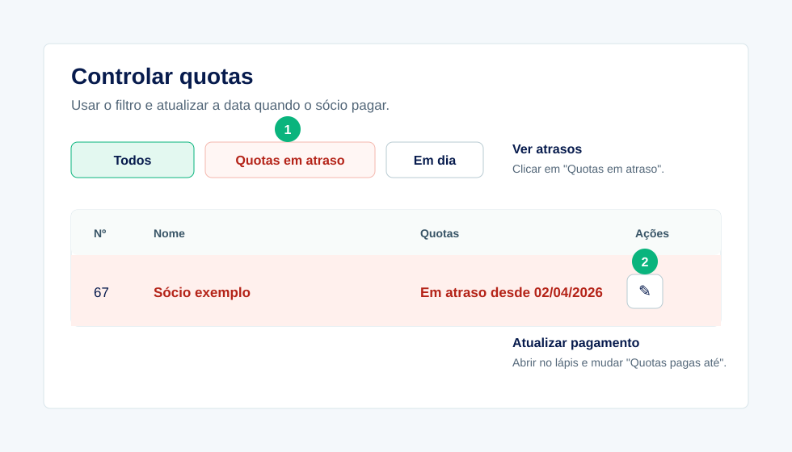

Sócios
Criar, consultar, editar e eliminar fichas de sócios autorizados.
Manual da aplicação
Guia de utilização, manutenção diária e orientação técnica para futuras atualizações.
Como usar este manual
Visão geral
Criar, consultar, editar e eliminar fichas de sócios autorizados.
Controlar a última quota anual paga, a data do pagamento e alertar atrasos.
Gerir administradores, operadores e utilizadores de consulta.
Consultar histórico de alterações para perceber quem alterou dados.
Exportar os dados para Excel ou CSV para backup e análise externa.
Login, permissões, RLS no Supabase e funções seguras na Vercel.
Utilizador
A conta tem de existir no Supabase Auth e estar ativa na lista de utilizadores autorizados.

Utilizador

Utilizador
Utilizador

Utilizador
Cria uma folha Excel com os dados visíveis.
Alterna entre tema claro e tema escuro.
Mostra alterações feitas aos sócios, com data e utilizador.
Permite usar a interface em português ou inglês.
O botão "Gestor de Administradores" fica fora deste menu e só aparece a administradores.
Utilizador administrador
| Perfil | Permissão |
|---|---|
| Administrador | Tudo, incluindo utilizadores. |
| Operador | Criar e editar sócios. |
| Consulta | Apenas consultar. |
Manutenção diária
Manutenção diária
Apagar remove a ficha do sócio. Quando houver dúvida, editar ou adicionar observação interna.
Cada pessoa deve usar a sua conta. Não partilhar passwords entre utilizadores.
Terminar sessão depois de usar a aplicação fora de computador pessoal.
Recolher apenas dados necessários e manter exportações em local protegido.
Manutenção diária
| Problema | O que fazer |
|---|---|
| Não consigo entrar | Confirmar email, password e se a conta está ativa. |
| Não vejo Gestor de Administradores | A conta provavelmente não é administradora. |
| Sócio aparece em atraso | Usar "Pagar quota" ou atualizar a última quota paga. |
| Campo novo não aparece | Confirmar se o SQL correspondente foi corrido no Supabase. |
| Site parece desatualizado | Fazer Ctrl + F5 para limpar cache do browser. |
Programador
Pasta local deste computador
C:\Users\Asus\Documents\New project
Repositório GitHub
https://github.com/jf77ps/Socios_MenteMovimento
Website publicado
https://socios-mente-movimento.vercel.app
O GitHub é a fonte principal para partilhar o projeto. A Vercel publica a partir do branch principal.
Programador
| Ficheiro/Pasta | Função |
|---|---|
index.html | Estrutura visual da app, botões, tabelas, formulários e modais. |
styles.css | Layout, cores, tema claro/escuro, responsividade e aspeto das tabelas. |
app.js | Lógica: login, permissões, sócios, quotas, filtros, exportação e chamadas ao Supabase. |
config.js | Configuração pública do Supabase, nome da app e CAPTCHA se for ativado. |
vercel.json | Headers de segurança e regras da publicação na Vercel. |
Programador
api/Funções Vercel seguras: criar e eliminar utilizadores.
supabase/SQL da base de dados, políticas RLS e migrações manuais.
assets/Logotipo e imagens da associação.
vendor/Bibliotecas locais usadas pela app, sem depender de CDN externa.
docs/images/Imagens usadas nos guias e manuais.
README.md, GUIA_RAPIDO_UTILIZACAO.md, RELATORIO_FINAL_PROJETO.md e este manual.
Programador
node --check app.js.Programador
Alterar código não chega quando é criado um campo novo. Também é preciso executar o SQL correspondente no Supabase.
supabase/.Exemplos recentes: add-quota-paid-at.sql e add-approval-minute-number.sql.
Programador
api/create-user.js cria utilizadores sem ir manualmente ao Supabase.api/delete-user.js elimina utilizadores com proteções adicionais.SUPABASE_SERVICE_ROLE_KEY fica apenas na Vercel.config.js.Programador
node --check app.js?supabase/?Continuidade
Manter pelo menos duas pessoas com acesso administrativo ao GitHub, Vercel e Supabase.
Sempre que possível, usar emails da associação para propriedade dos serviços.
Guardar credenciais num local seguro e ativar autenticação de dois fatores.
Exportar dados regularmente e guardar cópias protegidas.
Resumo final
A app serve para manter os sócios, quotas e acessos organizados num website online protegido.
Utilizadores devem manter os dados certos, exportar backups e evitar apagar sem confirmação.
Programadores devem mexer nos ficheiros certos, testar localmente, publicar pelo GitHub e aplicar SQL no Supabase quando houver mudanças na base de dados.